"SIGBOVIK 2024 is the eighteenth edition of this esteemed conference series, which was formed in 2007 to celebrate the inestimable and variegated work of Harry Quale Bovik. We especially welcome the three neglected quadrants of research: joke realizations of joke ideas, joke realizations of serious ideas, and serious realizations of joke ideas."
| ↑ Realization seriousness |
Serious realizations of joke ideas | Serious realizations of serious ideas |
|---|---|---|
| Joke realizations of joke ideas | Joke realizations of serious ideas | |
| Idea seriousness → | ||
Last year's SIGBOVIK paper
Bean There, Done That
A mathematical model of bean sculptures
| Parliament | Cloud Gate | |
|---|---|---|
| Annual visitors | 3 million | 5 million |
| Construction cost | (Restoration alone) $4.5 billion | $23 million |
\(\frac{5,000,000}{3,000,000}\) > 1
\(\frac{\$23,000,000}{\$4,500,000,000}\) < 1
Bean sculptures
- Singlehandedly put Chicago on the map
- Naturally, every city wants one
- NYC got one
- Ottawa had one since the 60s
 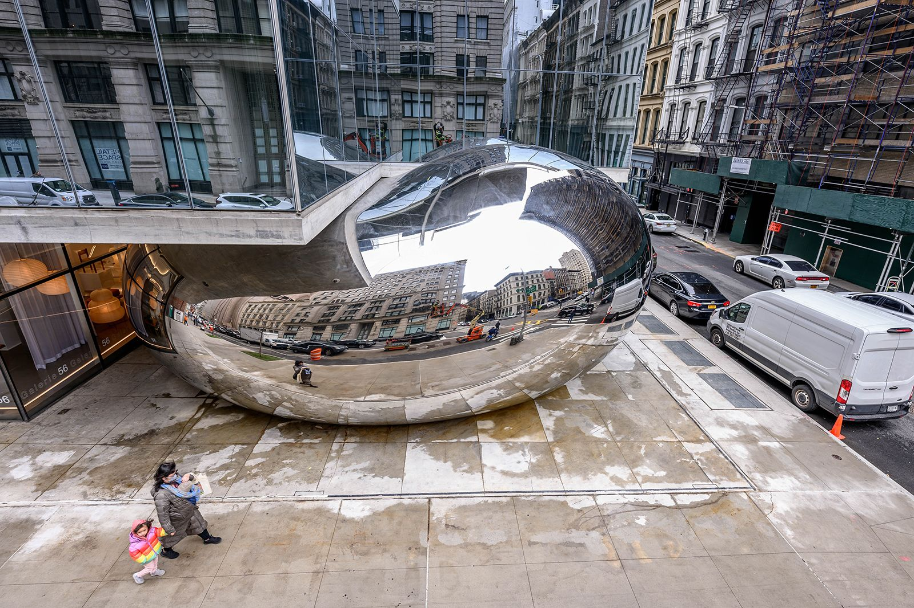
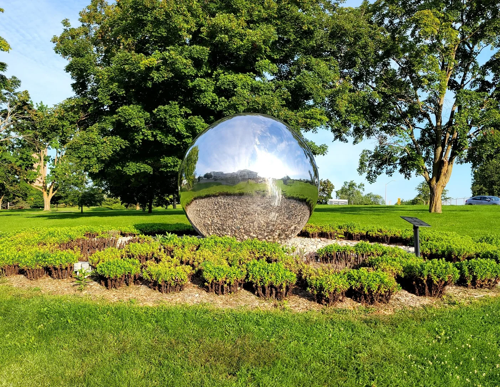
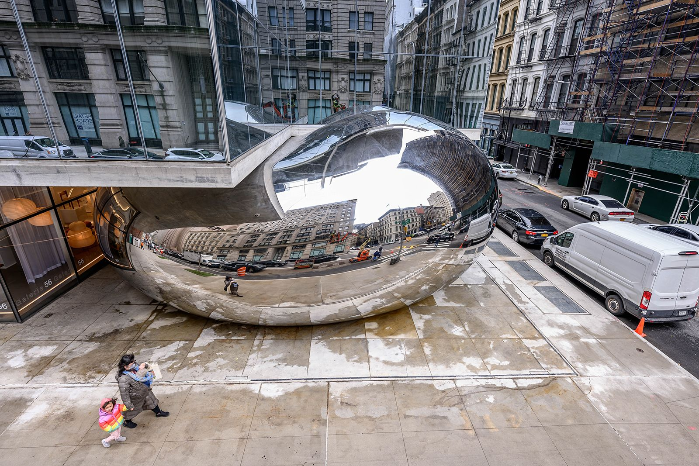
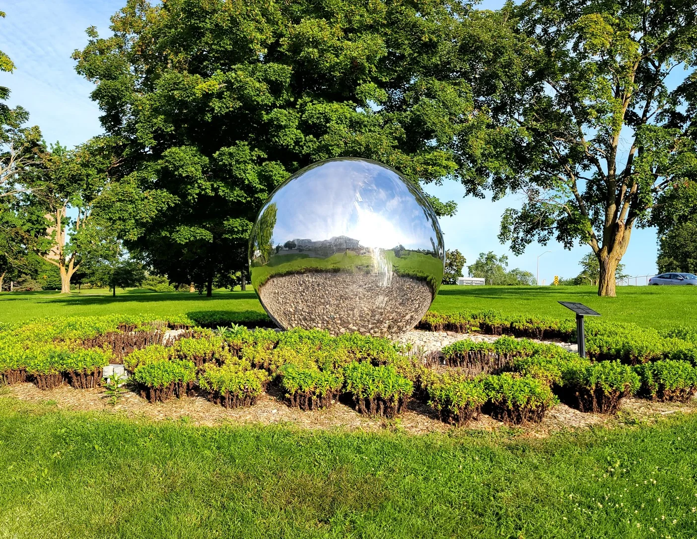
Research questions
- How do we mathematically describe the space of bean sculptures?
- How do we help every city find their own unique bean?
Method
Bean Components
- A quadratic Bézier curve
- Each has three control points
- The middle one is constrained for maximum beaniness
Bean Components
- This is enough for our bean examples:
However...
Turning other landmarks into beans
- How do we turn these into beans?

Novel beans
- We can combine multiple segments to make composite beans
- But how do we make sure the result is still smooth?
- We'll use signed distance functions
Signed Distance Functions
- A function \(f: \mathbb{R}^n \mapsto \mathbb{R} \)
- A function that describes, for any point in space, the distance to the surface of a shape
- Positive means it's outside the shape, negative means it's inside
Signed Distance Functions
- A circle: for \(f(X) = \vert X \vert - r \)
Signed Distance Functions
- Combining two SDFs with a union \(\min(d_1, d_2)\)
Signed Distance Functions
- Combining two SDFs with a smooth union \(d_1 + kg(d_2 - d_1)/k\)
Combining Curves
- Combining two curves instead of circles:
In 3D
Automatically replacing landmarks
Markov-Chain Monte Carlo (MCMC) Optimization
- Pick random starting parameters
- Mutate the reference to create a proposal
- If the proposal is better than the reference, make it the new reference
- If it's worse, randomly still make it the proposal, where this is less likely to happen the farther from the target it is
- Go back to step 2 (until you run out of patience)
- Use the best option you've encountered
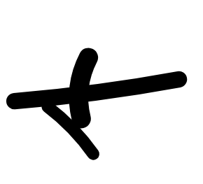
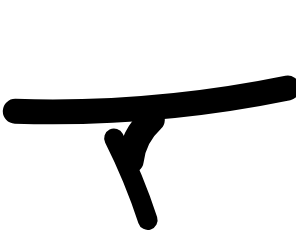
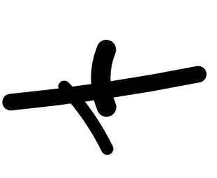
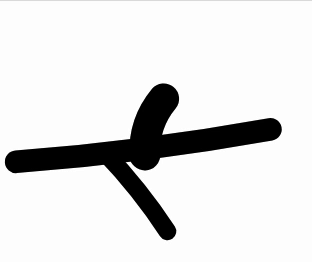
What does "better" mean?
- Compare the opaque pixels between a bean and a landmark
- Maximize intersection: as many black pixels as possible
- Minimize union: as few red + cyan pixels as possible
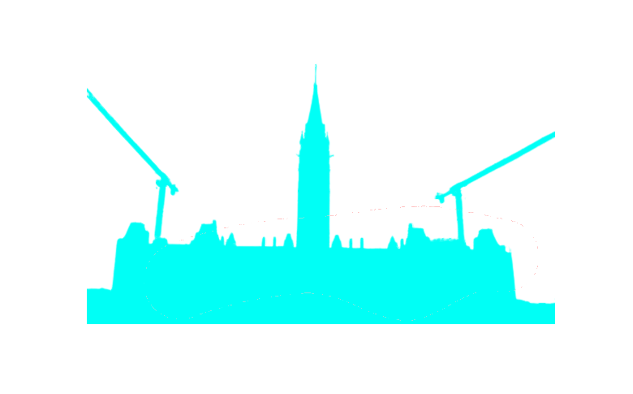
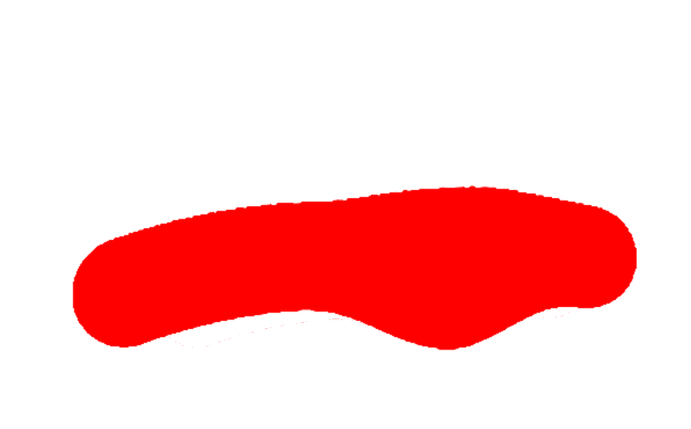
In action
Results
 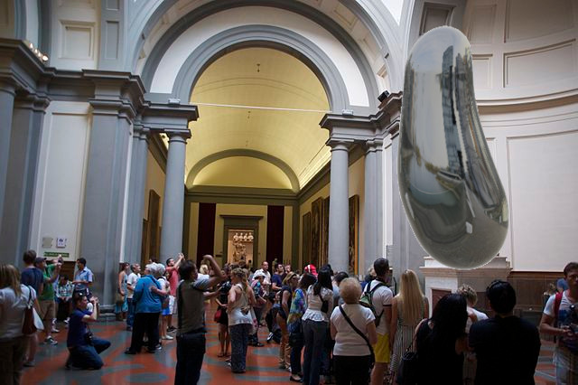
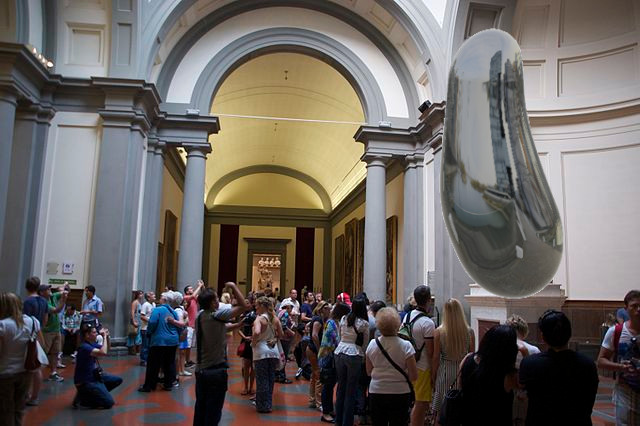
 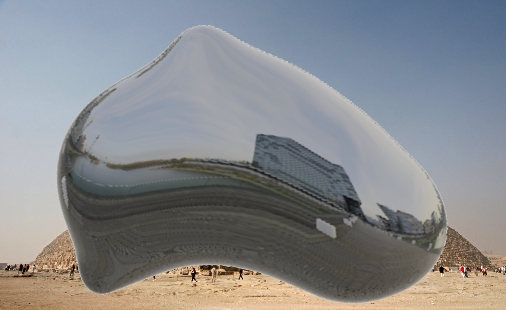
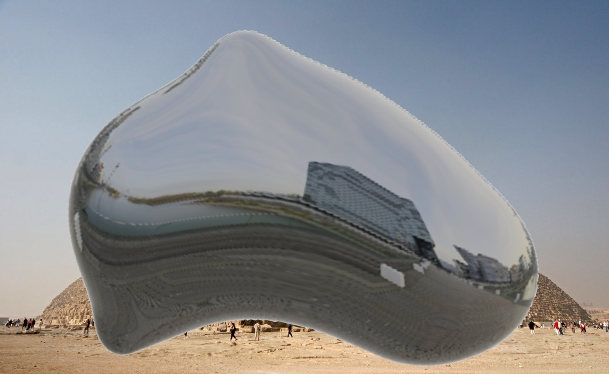
 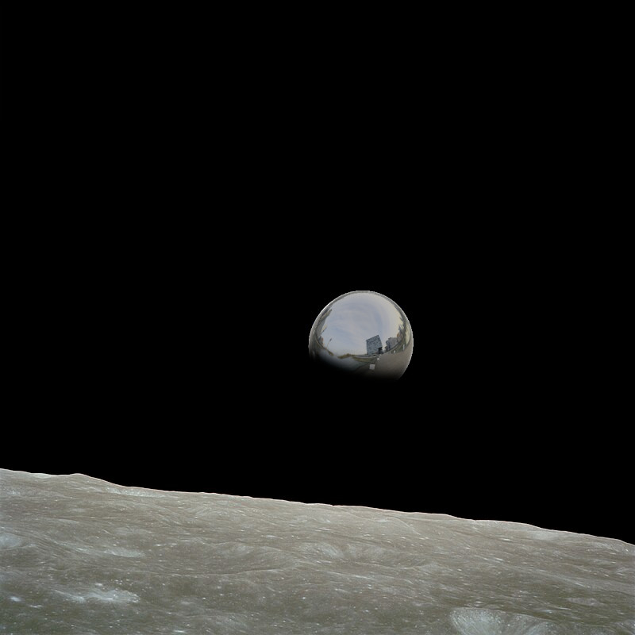
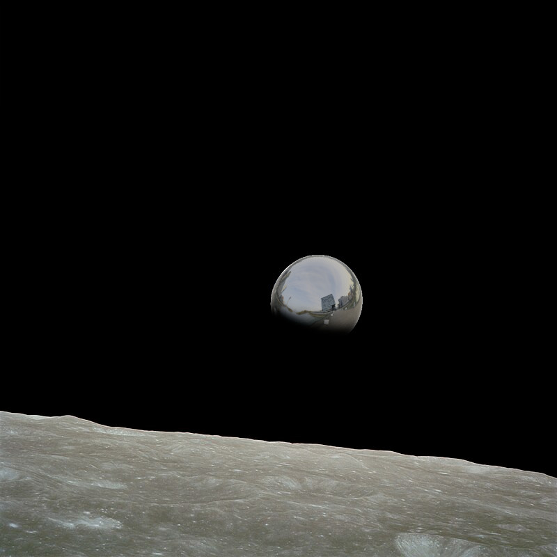